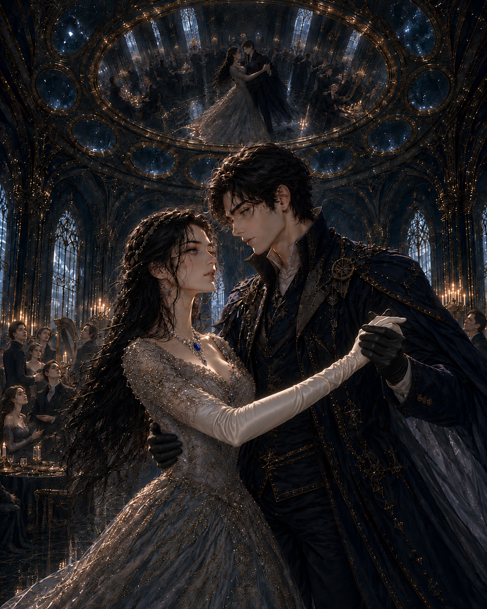

홀리스가 아이리스를 무도회장 중앙으로 이끌었다.
사람들이 둘을 위해 물러났다. 천장의 거울마다 두 사람의 모습이 차례로 비쳤다.
현악단이 짧은 전주곡을 시작했다.
오래된 왕실 왈츠였다.
아이리스의 몸은 첫 음을 듣는 순간 이미 움직임을 알고 있었다.
왼발을 반걸음 뒤로.
오른발을 옆으로.
발끝은 바닥에서 떨어지지 않게.
어깨는 움직이지 않고, 시선은 상대의 턱 아래에.
첫 회전에서는 미소를 유지하고, 두 번째 회전에서는 관중을 향해 얼굴이 열리도록.
여섯 살 때부터 익힌 동작이었다.
머리보다 몸이 먼저 기억했다.
아이리스는 첫걸음을 내디뎠다.
홀리스도 정확한 박자에 맞춰 움직였다.
처음 세 걸음은 완벽했다.
네 번째 걸음에서 그가 박자를 아주 조금 늦췄다.
아이리스의 발끝이 예상했던 위치보다 반 치 앞에서 멈췄다.
그녀는 즉시 균형을 바로잡았다.
다음 걸음에서는 홀리스가 반 박자 먼저 방향을 틀었다.
아이리스의 등을 받치고 있던 홀리스의 손에 아주 미세한 힘이 실렸다.
강하게 잡아당긴 것은 아니었다.
그러나 그녀가 외워둔 궤도를 벗어나기에는 충분했다.
아이리스는 본능적으로 발을 바꾸었다.
거울 속에서는 두 사람이 흠잡을 데 없이 춤추고 있었다.
밖에서 보는 사람에게는 방금 멈칫한 발끝조차 드레스 자락에 가려 보이지 않았을 것이다.
홀리스의 움직임은 겉으로는 고전 왈츠의 형식을 벗어나지 않았다.
그런데도 아이리스가 외운 순서대로 움직이려 할 때마다 다음 걸음이 조금씩 달라졌다.
처음에는 불쾌했다.
그가 일부러 자신을 시험한다고 생각했다.
이대로 한 번이라도 발이 엉키면 대전 전체가 보게 될 것이었다.
판정 의식에서 완벽함을 인정받은 바로 다음 날, 변경의 사절과 춤을 추다 스텝을 놓친 공주를.
아이리스는 홀리스의 어깨 너머로 천장의 거울을 확인하려 했다.
그 순간 홀리스가 다시 방향을 틀었다.
아이리스의 시야에서 거울이 사라졌다.
대신 그의 얼굴이 가까워졌다.

“거울을 보시면 늦습니다.”
홀리스가 낮게 말했다.
“무엇이 말입니까?”
아이리스가 미소를 유지한 채 물었다.
“다음 걸음이요.”
그가 대답했다.
“전하께서는 늘 다음을 알고 계시는 줄 알았는데.”
“경께서 박자를 지키지 않고 있으니까요.”
“지키고 있습니다.”
홀리스의 손이 그녀의 등을 가볍게 이끌었다.
이번에는 정확한 정박자였다.
아이리스의 몸이 오히려 늦었다.
“다만 매번 같은 방식으로 지키지 않을 뿐입니다.”
그녀는 대답하지 못했다.
홀리스는 다시 한 걸음 옆으로 움직였다.
아이리스는 그의 어깨와 손목, 숨이 들어오는 순간을 살폈다. 다음 동작을 예측하기 위해서였다.
고개를 들자 홀리스는 이미 그녀를 보고 있었다.
다음 표정을 생각할 틈이 없었다.
발을 어디에 놓아야 하는지, 어느 쪽으로 중심이 이동하는지, 그의 손이 언제 방향을 바꾸는지.
그것만으로도 머릿속이 가득 찼다.
한순간 계산이 멈췄다.
대전의 수백 개 시선도,
천장의 거울도,
자신을 판단하던 모든 기준도 멀어졌다.
홀리스가 숨을 들이마시면 몸의 중심이 아주 조금 높아졌다. 내쉬는 순간에는 손끝의 힘이 느슨해졌다. 그 작은 변화들이 다음 걸음을 알려주었다.
이번에는 발을 어디에 놓았는지 생각하기도 전에 두 사람이 나란히 회전을 마쳤다.
홀리스가 회전의 폭을 넓혔다.
아이리스의 드레스 자락이 바닥 위로 크게 펼쳐졌다.
사파이어가 가슴 위 한가운데에서 크게 흔들렸다.
목걸이의 가장자리가 붉어진 피부를 스쳤다.
따끔한 통증과 함께 아이리스의 호흡이 짧게 끊겼다.
아이리스는 반사적으로 어깨를 펴고 입술 끝을 올렸다. 아무 일도 일어나지 않았다는 듯 눈매의 힘을 풀고, 흐트러진 숨을 목 안으로 삼켰다.
염려하지 않으셔도 됩니다.
홀리스의 시선이 그녀의 얼굴에 잠시 머물렀다. 그의 입가가 아주 조금 움직였다.
“무엇이 우습습니까?”
그녀가 물었다.
“전하의 얼굴에는 정답이 너무 많아서요.”
홀리스가 말했다.
두 사람은 다시 한 번 회전했다.
“방금 그 표정은 누구를 안심시키기 위한 겁니까?”
그의 목소리는 음악 아래로 낮게 가라앉았다.
“저입니까?”
홀리스의 시선이 천장으로 향했다.
“아니면 저 부지런한 거울입니까?”
아이리스의 발끝이 한순간 늦었다. 홀리스가 즉시 그녀의 중심을 받쳤다.
밖에서 보기에는 춤의 일부였을 것이다.
“경은 공주의 표정에 지나치게 많은 의미를 부여하는군요.”
아이리스가 다시 박자를 찾으며 말했다.
“이번 것은 대답입니까, 아니면 또 다른 정답입니까?”
아이리스는 왈츠를 멈추고 싶었다. 그러나 음악은 끝나지 않았고, 수백 명의 사람이 보고 있었다.
그녀는 미소를 유지했다.
“경께서는 모든 대화에서 상대를 불편하게 만드는 편인가요?”
“방금은 그랬던 모양이군요.”
이번에는 그도 웃지 않았다. 다음 회전의 폭이 조금 좁아졌다.
“돌 때마다 숨을 멈추시기에.”
홀리스의 시선이 사슬 아래, 분으로도 완전히 가려지지 않은 붉은 흔적에 잠시 머물렀다.
“보기보다 무거운 물건인가 보군요.”
아이리스의 손끝이 그의 어깨 위에서 아주 조금 움츠러들었다.
“왕실의 예물입니다.”
“그렇습니까.”
홀리스는 시선을 거두었다.
아름답다고도, 잘 어울린다고도 하지 않았다. 아이리스는 그제야 그가 물은 것은 예물의 내력이 아니었다는 것을 알았다.
“당신은 처음 만난 사람에 관해 지나치게 많은 것을 안다고 생각하는군요.”
“아는 것은 없습니다.”
그가 대답했다.
이번에는 목소리에 장난기가 없었다.
“보이는 것을 말했을 뿐입니다.”
“사람들은 누구나 보이는 것을 봅니다.”
“대개는 보고 싶은 것을 보지요.”
아이리스의 눈이 가늘어졌다.
“경은 다르다고 생각합니까?”
“아직은 모르겠습니다.”
홀리스가 말했다.
“다만 전하께서 괜찮아 보일 때마다, 그렇지 않은 쪽을 한 번 더 보게 되는군요.”
아이리스는 대답하지 못했다.
한 번 더.
그 말이 이상하게 귀에 남았다. 오전에 홀리스가 천장의 거울을 보다가 드레스 자락을 움켜쥔 그녀의 손으로 눈을 내렸던 순간이 떠올랐다.
“그렇다면 무엇이 보입니까?”
질문은 아이리스가 생각하기 전에 입 밖으로 나왔다.
누군가에게 배운 문장도, 미리 준비한 대답도 아니었다.
홀리스가 그녀를 바라보았다. 음악은 마지막 회전으로 향하고 있었다.
“아직은 모르겠습니다.”
홀리스가 말했다.
“그래서 조금 더 보고 싶은 모양입니다.”
마지막 음이 울렸다.
홀리스의 손이 아이리스의 등에서 떨어졌다.
그는 그녀의 손끝을 받친 채 정확한 각도로 허리를 숙였다.
춤을 시작할 때와 조금도 다르지 않은 완벽한 예법이었다.
“영광이었습니다, 전하.”
대전 안에서 박수가 터졌다.
왕국의 후계자는 변경 사절을 품위 있게 맞이했고, 변경의 후계자는 왕실의 환대에 아름다운 춤으로 답했다. 곁에서 들려오는 찬사는 한결같았다.
천장의 거울 역시 두 사람의 마지막 자세를 눈부시게 비췄다.
홀리스는 더 머물지 않았다. 커런에게도 정중히 고개를 숙인 뒤 사절단의 자리로 돌아갔다.
커런이 곧 아이리스에게 다가왔다.
“괜찮습니까?”
아이리스는 대답하려 했다.
염려하지 않으셔도 됩니다.
입술은 이미 그 문장을 위한 모양을 만들고 있었다.
그러나 심장이 너무 빠르게 뛰고 있었다. 정해진 박자를 놓친 듯 갈비뼈 안쪽을 거칠게 두드렸다. 춤은 끝났는데도 몸은 여전히 홀리스의 다음 움직임을 기다리는 듯했다.
“아이리스?”
커런이 다시 불렀다.
“괜찮아요.”
목소리는 평소와 같았다.
적어도 그렇게 들리기를 바랐다.
커런은 그녀의 얼굴을 확인한 뒤에야 고개를 끄덕였다.
“그가 전하와 춤추는 모습은 보고 싶지 않았습니다.”
그가 낮게 말했다.
“외교적인 예우였어요.”
“알고 있습니다.”
커런의 시선이 홀리스의 뒷모습으로 향했다.
“그래서 아무 말도 하지 않은 겁니다.”
아이리스는 대답하지 않았다.
홀리스는 사절단 사이에 서서 한 장군의 말을 듣고 있었다.
그의 얼굴에는 아까 자신에게 보였던 표정이 남아 있지 않았다.
느긋하고 사교적이며, 아무 일도 일어나지 않은 사람의 얼굴이었다.
아이리스는 천장의 거울을 올려다보았다.
거울 속 공주는 여전히 아름다웠다. 드레스는 한 치의 흐트러짐도 없었고, 사파이어는 정확한 자리에 놓여 있었다.
그러나 미소가 달랐다.
입술 끝의 한쪽이 아주 미세하게 늦게 올라가 있었다.
아침에 완성했던 얼굴이라면 일어나지 않았을 어긋남이었다.
아이리스는 입가에 힘을 주고 눈매를 조금 낮추었다. 거울 속 미소가 제자리를 찾기까지는 한순간이 더 걸렸다.
누군가 보았을까.
펜이 기록했을까.
거울이 기억했을까.
아이리스는 대전 안을 둘러보았다.
박수는 잦아들고 사람들은 다시 대화에 빠져 있었다. 현악단은 커런과 그녀의 첫 왈츠를 준비하고 있었다.
멀리 서 있는 홀리스와 눈이 마주쳤다.
그는 웃지 않았다.
고개를 숙여 아는 척하지도 않았다.
아이리스는 자신도 모르게 드레스 자락을 움켜쥐었다. 곧 손가락에 힘이 들어갔다는 사실을 알아차리고, 천천히 손을 폈다. 구겨진 자락을 쓸어내리고 사파이어가 제자리에 있는지 한 번 더 확인했다.
흔들린 흔적이 남지 않게.
자신만 알고 있어야 할 것을 낯선 사람이 먼저 발견한 듯 불쾌했다. 그런데 그 아래에는 아직 이름 붙일 수 없는 안도가 남아 있었다.
숨이 끊겼던 그 한 걸음을 누군가는 보았다는 데서 오는 안도.
아이리스는 그것을 느끼지 않은 척했다.
커런이 손을 내밀었다. 입술 끝을 들어 올리고 눈매의 힘을 풀었다. 거울 속 미소를 다시 제자리에 놓았다.
그러나 예전처럼 완벽하지는 않았다.